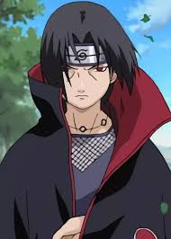

Naruto
220 episodes • Released: October 3, 2002
Naruto Uzumaki is a young ninja from the Hidden Leaf Village who dreams of becoming the greatest ninja and earning the title of Hokage, the village leader. As a baby, a powerful demon fox called the Nine-Tails was sealed inside him, causing the villagers to fear and avoid him.
Despite growing up alone and being treated like an outcast, Naruto remains cheerful and determined. As he trains to become stronger, he forms close bonds with teammates Sasuke Uchiha and Sakura Haruno, under the guidance of their teacher Kakashi Hatake.
Throughout the series, Naruto faces powerful enemies, uncovers secrets about his past, and tries to bring back Sasuke, who leaves the village to seek power. He grows not just in strength, but in wisdom, eventually becoming a hero who unites villages and brings peace to the ninja world.
Voice Actors
Naruto Uzumaki
Voice: Junko Takeuchi
Role: Main Protagonist
Sasuke Uchiha
Voice: Noriaki Sugiyama
Role: Rival & Avenger
Sakura Haruno
Voice: Kate Higgins
Role: Medical Ninja
Tsunade
Voice: Debi Mae West
Role: Hokage

Itachi Uchiha
Voice: Crispin Freeman
Role: Misunderstood Savior
⭐⭐⭐⭐☆ 4.5/5